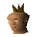

Dwarf youngster

| Config name | dwarfchildtw1 |
| NPC id | 207 |
| Combat level | hidden |
| Hitpoints | 6 |
| Options | Talk-to |
| Wander range | 5 tiles from spawn |
| Max range | 7 tiles from spawn |
| Defined in | scripts/quests/quest_mcannon/configs/quest_mcannon.npc |
Dwarf youngster
A young Dwarf lad.
Drops
No drops recorded.
Locations
This NPC is not placed on the map by the map files (it may be spawned by scripts, e.g. during quests, or be a variant).
Dialogue
Dwarf youngsterThank the heavens, you saved me! I thought I'd be goblin lunch for sure!
PlayerAre you okay?
Dwarf youngsterI think so, I'd better run off home.
PlayerThat's right, you get going. I'll catch up.
Dwarf youngsterThanks again, brave adventurer.
Quests
Referenced in scripts
scripts/quests/quest_mcannon/scripts/locs/mcannon_crate.rs2scripts/quests/quest_mcannon/scripts/npcs/dwarfchildtw1.rs2